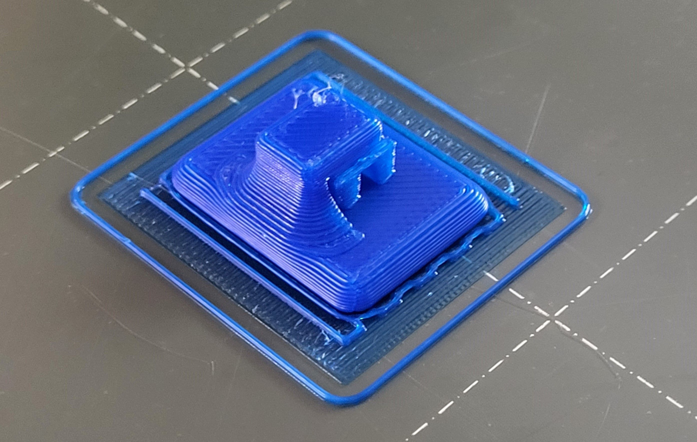

<br>
#### Week 4: 3D Printing
This week I made my very first 3D print! I've only ever handled 3D printed objects, but never printed or designed anything to be printed myself, so this was a very exciting week for me.
<h4>3D Printing a Hook</h4>
I ended up making a small hook to hang up some decorations in my dorm room. Here it is on the printer.
<br>

<br>
I printed it with supports under the actual hook, so I had to remove those after it printed. Here it is from the side after removing supports.
<br>
<br>
And here it is in use in my room!
<br>
<br>
I designed the hook in Fusion by extruding various shapes from sketches, combining them together, and filleting/chamfering a bit. Check it out!
<br>
<br>
<iframe src="https://college470.autodesk360.com/shares/public/SH35dfcQT936092f0e4310a2f072012ccffb?mode=embed" width="640" height="480" allowfullscreen="true" webkitallowfullscreen="true" mozallowfullscreen="true" frameborder="0"></iframe>
You can download my Fusion file, STL file, and gcode for the hook here.
<a download href='hook v1.f3d'>Download my Fusion file </a>
<br>
<a download href='Nina_hook_v1.stl'>Download my STL file </a>
<br>
<a download href='Nina_hook_v1_0.3mm_PLA_MK3S_12m.gcode'>Download my gcode </a>
<h4> Scanning </h4>
Part of the assignment this week was also to scan something. I tried to scan a couple different things using Sense Scan and something else using the Revopoint Pop 2 3D Scanner.
<h5> Rubber Duck</h5>
Here's a pretty bad scan of a rubber duck made with the Sense Scan. I found it was really finicky and hard to use, plus it fused things together wrong, as you can see here in the model it generated. Looks vaguely like a two-headed rubber duck with a lot of added noise, like the platform it was resting on and various other points the scanner mistakenly picked up.
<iframe src="https://college470.autodesk360.com/shares/public/SH35dfcQT936092f0e43278e959c17df5978?mode=embed" width="640" height="480" allowfullscreen="true" webkitallowfullscreen="true" mozallowfullscreen="true" frameborder="0"></iframe>
<a download href='Nina_duck.stl'>Download my rubber duck STL file </a>
<br>
<h5> Statue </h5>
I also tried to scan a small bust of someone's head using a different scanner, and those turned out better. I used a moving turntable and a stationary Revopoint Pop 2 3D Scanner.
On the first attempt, I moved the camera higher to get more of the top of the figure's head. It ended up confusing the scanner a little bit, so I just didn't move the camera the second time and it turned out much clearer.
I didn't take any screenshots on the shared lab computer, but maybe you can download these object files and see the results of these scans for yourself...
<model-viewer alt="scan of bust, attempt 1" src='nina1.glb' shadow-intensity="1" camera-controls touch-action="pan-y"></model-viewer>
<a download href='Nina_scan_try1_fuse.obj'>Download my first attempt OBJ file </a>
<a download href='Nina_scan_2_fuse.obj'>Download my second attempt OBJ file </a>
<br>
Click [here](../index.html) to return to the homepage.